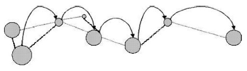

<section>
  <div class="content">
    <h1 class="title">Funcionamento</h1>
    <h3>Protocolos</h3>
    <p>A comunicação entre nodos em uma rede de sensores sem fio é um grande desafio e seu gerenciamento será discutido agora, quando veremos os diferentes tipos de protocolos gerenciadores. Antes de tratarmos destes protocolos, vamos abordar dois conceitos de topologia de rede necessários para entendermos melhor o funcionamento das conexões em uma RSSF.</p>
    <p>O primeiro conceito desenvolvido será o de rede ad hoc. Toda RSSF é uma rede ad hoc sem fio, isto significa que elas não possuem um elemento centralizador da comunicação. Os elementos computacionais (no caso das RSSFs, os nodos) podem trocar dados diretamente entre si, funcionando como roteadores e trabalhando de forma comunitária na comunicação.</p>
    <p>O segundo conceito trata da transmissão multi-hop. Como, pelas próprias aplicações e limitações das RSSFs, é necessário, quase sempre, um consumo baixo de energia nos nodos, as ondas envolvidas nas comunicações não possuem, em geral, um grande alcance. Sendo assim, se torna muito difícil a transmissão entre dois nodos distantes, se fazendo necessária a propagação em vários saltos, entre nodos vizinhos, até os dados chegarem no destino final. Esse tipo de transmissão em saltos é denominada de multi-hop. Um exemplo pode ser visto na Figura.</p>
    <div class="img">
      
    </div>
    <h3>IEEE 802.11</h3>
    <p>Os protocolos IEEE 802.11 atuam em camada física, foram criados pelo Instituto de Engenheiros Elétricos e Eletrônicos com a intenção de padronizar as comunicações sem fio e são conhecidos também como Wi-Fi. Eles também são baseados numa transmissão half-duplex, over theair e com sinais modulados.</p>
    <h3>Bluetooth</h3>
    <p>O Bluetooth é uma especificação de rede sem fio que visa conectar, com frequências de rádio de curto alcance, componentes que não estejam muito separados e, geralmente, de âmbito pessoal.</p>
    <p>Uma rede Bluetooth é dita do tipo rede piconet. Isto ocorre, pois, quando dois ou mais dispositivos se conectam por meio dela, o que iniciou a conexão é denominado de mestre e os outros, de escravos. Cabe ao mestre controlar a transmissão de dados, assim como o sincronismo. Um conjunto de mestre e escravos (totalizando, no máximo, 8 dispositivos) é chamado de piconet. Os piconets ainda podem juntar-se para formar o que chamamos de scatternet. Lembrando que um escravo pode fazer parte de mais de um piconet, enquanto um mestre não.</p>
    <h3>ZigBee</h3>
    <p>O conjunto de especificações ZigBee é o mais importante que veremos, pois é o mais utilizado em RSSFs devido à sua baixa potência de operação, baixo custo de implantação e possibilidade de implementação de redes com uma grande quantidade de dispositivos. Ele é composto por, basicamente, três tipos de dispositivos: os coordenadores, os roteadores e os end devices. Os primeiros inicializam a rede e gerenciam os outros nós. Os roteadores roteiam as mensagens para outros nós. E os end devices são os mais simples e possuem o papel único de sensoriamento e transmissão de dados. Qualquer um destes dispositivos pode permanecer “dormindo” durante um longo período, sendo que possuem um tempo de reativação muito pequeno comparado ao de outras tecnologias, o que faz das redes ZigBee ótimas economizadoras de energia.</p>
  </div>
</section>
